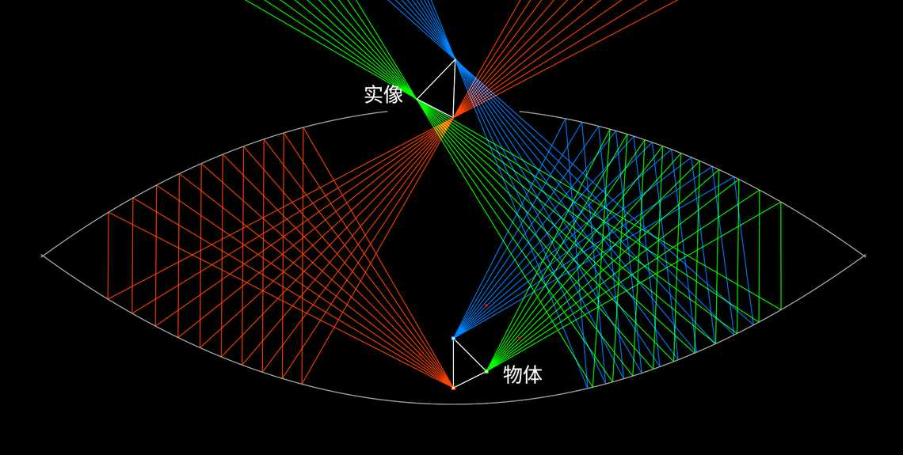

贡献者：Mario Petitclerc
幻象镜 是一种有趣的光学幻觉演示装置，它利用两个面对面的抛物面镜来产生一个立体悬浮影像的幻觉。该装置由以下部件构成：
当来自物体的光线在两个镜子之间反射时，它的方向会改变为形成一个看似逼真、立体的影像，悬浮于幻象镜的表面上方。这种幻象如此逼真，人们常常试图触摸影像，结果发现什么也没有。
幻象镜被广泛用于科学演示、玩具及新奇物品，以说明光学中反射和光线行为的原理。
在模拟器中打开
